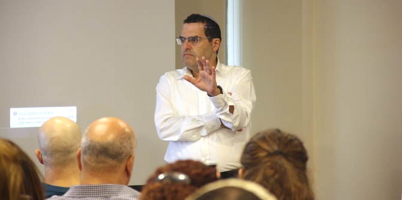

במפגש ראשון לשנת הלימודים תשע"ט התכנסו המפקחים ליום למידה במרכז מנדל למנהיגות בנגב, בהובלת פרופ' סמדר בן אשר וישראל שורק, חברי סגל המרכז, ואושרה שלייפר וזאב אלדר ממחוז דרום של משרד החינוך.
יום הלמידה נפתח בדברים שנשאו רם זהבי, מנהל המחוז החדש ובוגר מחזור ט"ז של בית ספר מנדל למנהיגות חינוכית, וד"ר עדי ניר שגיא, מנהלת מרכז מנדל למנהיגות בנגב. השניים בירכו על השותפות המקצועית ועל מפגשי הלמידה שמהווים מקור השראה לכל קהילה לומדת, והדגישו את חשיבות הרוח כבסיס לתהליך החינוכי. מנהל המחוז הרצה על שינוי ושיפור ועל ערכים מנחים לגיבוש תוכנית עבודה מערכתית, והוביל לימוד ושיח עמיתים על עבודת הפיקוח ודפוסים של הובלת שיפור על-פי מחקרם החינוכי של ריצ'רד פ' אלמור ודיאנה ברני.

ד"ר משה מאיר וישראל שורק הנחו את השיח על אתיקה של משמעות, והתייחסו לסוגיות מרכזיות באתיקה הקשורות בעבודתם של המפקחים. בין השאר עלו שאלות נוקבות הנוגעות לאומץ, לזכות וליכולת של אנשי חינוך לנקוט עמדות חד-משמעיות בסוגיות שמטבען הן פתוחות לפרשנות ולחשיבה הקשרית. התקיים שיח פורה על חשיבותו של חידוש בכל מפגש לימודי, ועל מאבקם המתמיד של מחנכים הומניסטיים בהנחה הנפוצה ש"הכל יחסי ותלוי תרבות".
יום הלמידה היווה הזדמנות לדיאלוג מקצועי פתוח בין המפקחים, המבוסס על דילמות והכרעות יומיומיות המתעוררות בעשייתם המקצועית.

{kind=link}